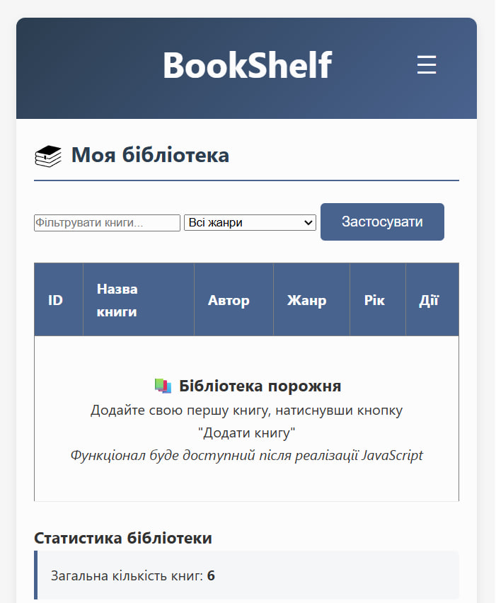
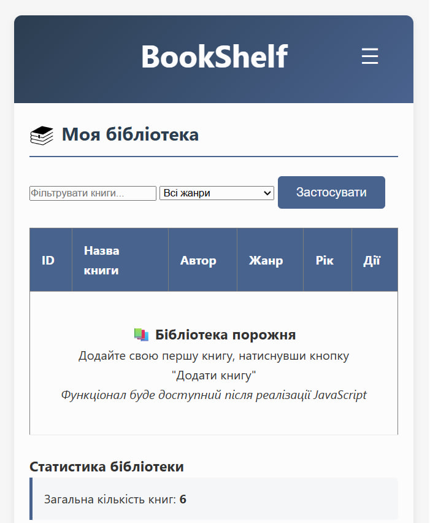

Тема, мета, місце розташування
Тема
ВЕРСТКА HTML-ДОКУМЕНТУ. БЛОКОВА ВЕРСТКА. ВЕРСТКА ЗАСОБАМИ CSS та FLEXBOX. АДАПТИВНА ВЕРСТКА. МЕДІА-ЗАПИТИ. МЕТАТЕГ VIEWPORT
Мета
- Придбати практичні навички роботи верстки сторінок засобами CSS, верстки на основі плаваючих елементів, з'ясувати переваги та недоліки типів макетів веб-сторінок
- Придбати практичні навички роботи верстки сторінок засобами CSS та FLEXBOX
Завдання 1: Відповідність веб-сайту вимогам
Змінений CSS веб-застосунку
1. Метатег viewport (з index.html):
2. Медіа-запити для адаптивної верстки:
3. Flexbox для навігації:
4. Блокова верстка та адаптивність:
Реалізовано мною:
- Адаптивну верстку з використанням медіа-запитів для різних розмірів екранів
- Коректне використання метатегу viewport
- Блокову верстку з плаваючими елементами
- Сучасну верстку за допомогою Flexbox для створення гнучких макетів
- Адаптивне бургер-меню для мобільних пристроїв
 

Завдання 2: Розмітка HTML-документа
Засобами HTML та CSS виконати Завдання №2 у звітному HTML-документі
- Розмітку за допомогою таблиці (варіант 1)
- Розмітку за допомогою блоків (плаваючих елементів) (варіант 2)
Завдання 2.1: Таблична верстка
Розмітка за допомогою таблиці
Варіант: 1
Фіксована таблична верстка (ширина 960px):
Хедер сайтуФіксована таблична верстка (960px) |
||
Ліва колонкаКонтент лівої колонки |
Центральна колонкаОсновний контент сайту |
Права колонкаДодатковий контент |
|
Футер сайту © 2025 |
||
HTML-код фіксованої табличної верстки:
Гумова таблична верстка (ширина 90%):
Хедер сайтуГумова таблична верстка (90%) |
||
Ліва колонкаКонтент лівої колонки |
Центральна колонкаОсновний контент сайту |
Права колонкаДодатковий контент |
|
Футер сайту © 2025 |
||
HTML-код гумової табличної верстки:
Завдання 2.2: Блокова верстка
Розмітка за допомогою блоків (плаваючих елементів)
Варіант: 2
Фіксована блокова верстка (ширина 960px):
Хедер сайту
Фіксована блокова верстка (960px)
Лівий блок
Бокова панель
Верхній правий блок
Горизонтальний блок ближче до верху
Права колонка 1
Перша колонка знизу
Права колонка 2
Друга колонка знизу
HTML-код фіксованої блокової верстки:
Гумова блокова верстка (ширина 90%):
Хедер сайту
Гумова блокова верстка (90%)
Лівий блок
Бокова панель
Верхній правий блок
Горизонтальний блок ближче до верху
Права колонка 1
Перша колонка знизу
Права колонка 2
Друга колонка знизу
HTML-код гумової блокової верстки:
CSS-код для блокової верстки:
Завдання 3: Flexbox верстка
Реалізація варіанту за допомогою Flexbox
Варіант (остання цифра 2):Професія Java-розробник
Портфоліо для старту кар'єри
Навчання на реальних кейсах
Заробіток після 4 місяців навчання
Можна працювати віддалено
Як проходить навчання
Дивіться відеолекції
Лічильні відео з аргументами ілюстративними емоцій.
Робите завдання і відправляєте на перевірку
Послідовити не менше, вибирайте аргументний режим навчання.
Чи отримуєте розбір вашої роботи
Опис курсового розроблення та теорії навчання 1 разу в тиждень.
Чи працюєте над помилками
Проводити інтерпретацію ще раз, щоб переконливості, що в цей раз все справляється.
Рівні навчання
Перший рівень: чітка і зрозуміла теорія
За 4 місяці вам необхідно буде пройти 16 тем. Ви самостійно вивчіть базові навички, з якими зможете створювати справжні проекти. Ви створите дипломний проект - діапазон блогу в веб-інтерфейсі. Захист проекту проходить у відкритому режимі - на нашому майданчику або по відеозв'язку.
Другий рівень: інтенсивна практика
Під керівництвом наставника ви в складі команди створите власну соціальну мережу. Фактично це частина програми прирівнюється до стажування. Вам видадуть ТЗ і дизайн проекту. Всі процеси, через які ви пройдете, - це максимально наближений до обов'язку умов досвід. Саме так створюється комерційне програмне забезпечення в фірмах-роботодавців.
CSS-код для Flexbox верстки:
Висновки до лабораторної роботи №3
Висновки
Під час виконання лабораторної роботи №3 було успішно освоєно роботу з різними типами верстки веб-сторінок: табличною, блоковою (з використанням плаваючих елементів) та сучасною версткою за допомогою Flexbox.
Ключові навички, отримані в ході роботи:
- Таблична верстка: Навчилась створювати макети веб-сторінок за допомогою HTML-таблиць, реалізувала як фіксовану (з заданою шириною), так і гумову (респонсивну) табличну верстку.
- Блокова верстка: Опанувала техніки верстки з використанням плаваючих елементів (float), що дозволяє створювати складні багатоколонкові макети. Реалізувала адаптивність блокової верстки за допомогою медіа-запитів.
- Flexbox верстка: Застосувала сучасну технологію CSS Flexbox для створення гнучких та адаптивних макетів. Flexbox дозволяє легко керувати розташуванням, розмірами та порядком елементів на сторінці.
- Адаптивна верстка: Реалізувала адаптивність для всіх типів верстки за допомогою медіа-запитів та метатегу viewport, що забезпечує коректне відображення на різних пристроях.
- Порівняльний аналіз: З'ясувала переваги та недоліки різних типів верстки. Таблична верстка проста, але негнучка та малопридатна для адаптивності. Блокова верстка з float більш гнучка, але вимагає додаткових зусиль для очищення потоків. Flexbox верстка є найсучаснішим та найгнучкішим підходом.
Загальний висновок: Виконання лабораторної роботи №3 дозволило отримати практичні навички роботи з основними типами верстки веб-сторінок. Отриманий досвід дозволяє обґрунтовано вибирати підхід до верстки залежно від конкретних вимог проекту. Сучасні технології, такі як Flexbox, надають розробникам потужні інструменти для створення складних, адаптивних та підтримуваних макетів.